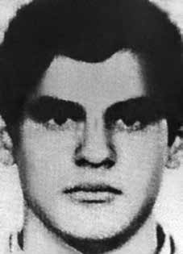

Antônio
Carlos
Nogueira
Cabral
CIRCUNSTÂNCIAS DA MORTE
Antônio Carlos Nogueira Cabral morreu no Rio de Janeiro (RJ), em 12 de abril de 1972, depois de ter sido preso por agentes do Destacamento de Operações de Informações – Centro de Operações de Defesa Interna do Rio de Janeiro (DOI-CODI/RJ).
De acordo com a versão oficial dos fatos, inicialmente, a Polícia Militar (PM) teria prendido Antônio Carlos no bairro de Ramos, no Rio de Janeiro. Em seguida, levado à sede do DOI-CODI, foi reconhecido como militante político. Durante o interrogatório a que foi submetido, descobriram que Antônio Carlos havia marcado um encontro com outro militante, próximo a uma escola no bairro de São Cristóvão. Acompanhado por uma equipe do DOI-CODI, Antônio Carlos foi até o local do encontro, quando teria escapado dos agentes que o acompanhavam.
Posteriormente, o Departamento de Ordem Política e Social (DOPS) teria informado ao DOI-CODI que havia “estourado” o “aparelho” da tua Zizi, no bairro de Lins de Vasconcelos, Zona Norte do Rio de Janeiro (RJ), onde foram encontrados materiais produzidos por militantes, além de máquinas impressoras e de datilografia sem, contudo, ter sido identificada a presença de qualquer pessoa no local. A partir dessa informação, o comandante do DOI-CODI encaminhou ao endereço a mesma equipe de agentes que teria permitido a fuga de Antônio Carlos e lá armaram uma emboscada.
Ao anoitecer, eles ocuparam o imóvel, até que por volta das 2h15 três pessoas teriam se aproximado do local e foram surpreendidas pelos agentes da repressão. Por não terem supostamente acatado a uma ordem de prisão, teria se iniciado um confronto armado, durante o qual Antônio Carlos teria sido atingido letalmente. Em seu final, o relatório confirmou que Antônio Carlos seria o mesmo homem que havia escapado dos agentes policiais.
A notícia sobre a morte de Antônio Carlos foi veiculada pelos jornais somente no dia 18 de abril de 1972. Os periódicos que noticiaram o ocorrido convergem quanto ao local da morte, mas não em relação ao seu horário. Enquanto a Folha da Tarde informou que o suposto tiroteio teria ocorrido às 2h20, o Jornal do Brasil disse que o confronto se deu às 22 horas. Em 1993, os ministérios da Marinha e da Aeronáutica elaboraram relatórios acerca do caso, os quais foram enviados ao Ministério da Justiça e confirmaram a versão oficial veiculada à época da morte de Antônio Carlos.
Os relatórios ratificam a versão segundo a qual Antônio Carlos teria morrido em 12 de abril de 1972, por volta das 5h25, ao resistir à prisão. O auto de exame cadavérico, produzido no dia 12 de abril, também reforça a versão oficial. Tal como apontado pelos relatórios citados, o atestado de óbito indica que Antônio Carlos morreu às 5h25. Entretanto, documentos informam que os peritos teriam atendido solicitação encaminhada pelo DOPS para laudo no local da morte às 3h40, portanto, antes da hora em que Antônio Carlos supostamente teria morrido.
Ademais, as fotos anexadas ao laudo de exame cadavérico apontam que havia feridas contusas e equimoses no corpo de Antônio Carlos, o que pode ser entendido como indícios de que ele foi submetido à tortura antes de morrer. No dia da sua morte, o corpo de Antônio Carlos Nogueira Cabral foi encaminhado ao Instituto Médico-Legal (IML) como pessoa ignorada. Contudo, restou reconhecido por sua irmã, Maria Elizabeth Nanni, em 18 de abril de 1972.
No dia seguinte, o corpo foi entregue à família, em um caixão lacrado. Os restos mortais de Antônio Carlos Nogueira Cabral foram enterrados em um cemitério da cidade de São Paulo, com a presença de agentes policiais.
Antônio Carlos Nogueira Cabral died in Rio de Janeiro (RJ), on April 12, 1972, after being arrested by agents from the Information Operations Detachment – Rio de Janeiro Internal Defense Operations Center (DOI-CODI/RJ).
According to the official version of the facts, initially, the Military Police (PM) arrested Antônio Carlos in the Ramos neighborhood, in Rio de Janeiro. Afterwards, taken to the DOI-CODI headquarters, he was recognized as a political activist. During the interrogation to which he was subjected, they discovered that Antônio Carlos had arranged a meeting with another militant, near a school in the São Cristóvão neighborhood. Accompanied by a DOI-CODI team, Antônio Carlos went to the meeting location, when he allegedly escaped from the agents who accompanied him.
Subsequently, the Department of Political and Social Order (DOPS) informed DOI-CODI that the “device” of your Zizi had “exploded”, in the neighborhood of Lins de Vasconcelos, North Zone of Rio de Janeiro (RJ), where materials produced by militants were found, as well as printing and typing machines, without, however, the presence of anyone at the location having been identified. Based on this information, the DOI-CODI commander sent the same team of agents that would have allowed Antônio Carlos to escape to the address and set up an ambush there.
At dusk, they occupied the property, until around 2:15 am, three people approached the place and were surprised by repression agents. Because they allegedly did not comply with an arrest order, an armed confrontation began, during which Antônio Carlos was fatally shot. At the end, the report confirmed that Antônio Carlos would be the same man who had escaped from the police agents.
The news about Antônio Carlos' death was published by newspapers only on April 18, 1972. The newspapers that reported what happened converged in terms of the place of death, but not in relation to its time. While Folha da Tarde reported that the alleged shooting had occurred at 2:20 am, Jornal do Brasil said that the confrontation took place at 10 pm. In 1993, the Ministries of the Navy and Air Force prepared reports on the case, which were sent to the Ministry of Justice and confirmed the official version published at the time of Antônio Carlos' death.
The reports confirm the version according to which Antônio Carlos died on April 12, 1972, around 5:25 am, when resisting arrest. The cadaver examination report, produced on April 12, also reinforces the official version. As pointed out by the aforementioned reports, the death certificate indicates that Antônio Carlos died at 5:25 am. However, documents state that the experts responded to the request sent by the DOPS for a report at the place of death at 3:40 am, therefore, before the time in which Antônio Carlos supposedly died.
Furthermore, the photos attached to the cadaveric examination report indicate that there were blunt wounds and bruises on Antônio Carlos' body, which can be understood as evidence that he was subjected to torture before dying. On the day of his death, Antônio Carlos Nogueira Cabral's body was sent to the Legal Medical Institute (IML) as an unknown person. However, he was recognized by his sister, Maria Elizabeth Nanni, on April 18, 1972.
The following day, the body was handed over to the family, in a sealed coffin. The mortal remains of Antônio Carlos Nogueira Cabral were buried in a cemetery in the city of São Paulo, with the presence of police officers.
Antônio Carlos Nogueira Cabral murió en Río de Janeiro (RJ), el 12 de abril de 1972, después de ser detenido por agentes del Destacamento de Operaciones de Información – Centro de Operaciones de Defensa Interna de Río de Janeiro (DOI-CODI/RJ).
Según la versión oficial de los hechos, inicialmente la Policía Militar (PM) detuvo a Antônio Carlos en el barrio de Ramos, en Río de Janeiro. Posteriormente, conducido a la sede del DOI-CODI, fue reconocido como activista político. Durante el interrogatorio al que fue sometido, descubrieron que Antônio Carlos había concertado una reunión con otro militante, cerca de una escuela del barrio de São Cristóvão. Acompañado por un equipo del DOI-CODI, Antônio Carlos se dirigió al lugar de la reunión, cuando presuntamente se escapó de los agentes que lo acompañaban.
Posteriormente, el Departamento de Orden Político y Social (DOPS) informó al DOI-CODI que el “aparato” de su Zizi había “explotado”, en el barrio de Lins de Vasconcelos, zona norte de Río de Janeiro (RJ), donde se encontraron materiales producidos por militantes, así como máquinas de imprimir y escribir, sin que, sin embargo, se haya identificado la presencia de nadie en el lugar. Con base en esta información, el comandante del DOI-CODI envió al mismo equipo de agentes que habría permitido a Antônio Carlos escapar a la dirección y preparar allí una emboscada.
Al anochecer ocuparon el inmueble, hasta que alrededor de las 2:15 horas, tres personas se acercaron al lugar y fueron sorprendidas por agentes de represión. Debido a que supuestamente no cumplieron una orden de detención, se inició un enfrentamiento armado, durante el cual Antônio Carlos fue asesinado a tiros. Al final, el informe confirmó que Antônio Carlos sería el mismo hombre que escapó de los agentes policiales.
La noticia sobre la muerte de Antônio Carlos fue publicada por los periódicos recién el 18 de abril de 1972. Los periódicos que informaron lo sucedido convergieron en cuanto al lugar de la muerte, pero no en relación a su época. Mientras Folha da Tarde informó que el presunto tiroteo se produjo a las 02:20 horas, el Jornal do Brasil informó que el enfrentamiento se produjo a las 22:00 horas. En 1993, los Ministerios de Marina y Fuerza Aérea elaboraron informes sobre el caso, que fueron enviados al Ministerio de Justicia y confirmaron la versión oficial publicada en el momento de la muerte de Antônio Carlos.
Los informes confirman la versión según la cual Antônio Carlos murió el 12 de abril de 1972, alrededor de las 05:25 horas, al resistirse al arresto. El informe del examen del cadáver, elaborado el 12 de abril, también refuerza la versión oficial. Según lo señalado por los informes antes mencionados, el certificado de defunción indica que Antônio Carlos falleció a las 5:25 horas. Sin embargo, los documentos afirman que los peritos respondieron a la solicitud enviada por el DOPS de un informe en el lugar de la muerte a las 3:40 am, por tanto, antes de la hora en que supuestamente murió Antônio Carlos.
Además, las fotografías adjuntas al informe del examen cadavérico indican que en el cuerpo de Antônio Carlos había heridas contundentes y contusiones, lo que puede entenderse como evidencia de que fue sometido a torturas antes de morir. El día de su muerte, el cuerpo de Antônio Carlos Nogueira Cabral fue remitido al Instituto Médico Legal (IML) en calidad de desconocido. Sin embargo, fue reconocido por su hermana, María Isabel Nanni, el 18 de abril de 1972.
Al día siguiente, el cuerpo fue entregado a la familia, en un ataúd sellado. Los restos mortales de Antônio Carlos Nogueira Cabral fueron enterrados en un cementerio de la ciudad de São Paulo, con la presencia de agentes policiales.